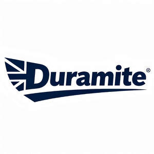

Trade Mark Journal No.2025/051 19 December 2025
UK00004307473 9 December 2025 (8)

- Class 8
- Hand tools and implements (hand-operated); Hand tools and implements [hand-operated]; Hand tools and implements, hand-operated; Hand-operated implements; Rotary tools [hand-operated tools]; Hand implements, hand-operated; Hand-operated sharpening tools and instruments; Hand tools, hand-operated; Boring tools [hand-operated tools]; Hand-operated cutting tools; Hand-operated tools for agriculture; Squeegees [hand-operated tools]; Handles for hand-operated hand tools; Sprays [hand-operated tools]; Chucks for hand-operated tools; Hand-operated tools for gardening; Tillers [hand-operated tools]; Routers [hand-operated tools]; Tensioners [hand-operated tools]; Hand-operated tools for forestry; Bits for hand-operated tools; Agricultural implements, hand-operated; Jigsaws [hand-operated tools]; Honing tools [hand-operated]; Rotary tool bits [hand-operated tools]; Bevels [hand-operated tools]; Ratchet handles [hand-operated tools]; Garden tools, hand-operated; Planing tools [hand-operated]; Hand-operated tools for drilling; Diamond cutting tools for hand-operated tools; Reaping hooks [hand-operated tools]; Pedicure implements [hand tools]; Abraders [hand-operated implements]; Tufting tools (Hand-operated -); Tighteners [hand-operated tools]; Rotary drills [hand-operated tools]; Rotary metal cutting tools [hand-operated tools]; Edging tools [hand-operated]; Box saws [hand-operated tools]; Socket sets [hand-operated tools]; Abrasive tools (Hand-operated -); Stone hammers [hand-operated tools]; Skimmers [hand-operated tools]; Brushes (steel -) [hand-operated tools]; Hand-operated riveting tools; Jig-saws [hand-operated tools]; Butchers saws [hand-operated tools]; Lawn rakes [hand-operated tools]; Block cutters [hand-operated tools]; Impact drills [hand-operated tools]; Rotary dies [hand-operated tools]; Wire brushes [hand-operated tools]; Bow saws [hand-operated tools]; Auger bits for use with hand-operated tools; Stencil cutters [hand-operated tools]; Hedge cutters [hand-operated tools]; Nut-tapping tools [hand-operated]; Countersinking tools for hand operated tools; Socket spanners [hand-operated tools]; Monkey wrenches [hand-operated tools]; Hand tools and implements (hand operated); Turnip cutters [hand-operated tools]; Stone graders [hand-operated tools]; Saw blades for use with hand-operated tools; Perforating tools [hand tools]; Cattle marking tools [hand-operated]; Bolt cutters [hand-operated tools]; Hand-operated tools for repair of vehicles; Lawn rollers [hand-operated tools]; Lawn aerators [hand-operated tools]; Hand-operated tools for bending pipes; Stone crushers [hand-operated tools]; Hand-operated tools and implements for treatment of materials, and for construction, repair and maintenance; Self-centring chucks [parts of hand-operated tools]; Rotary milling cutters [hand-operated tools]; Graving tools [hand tools]; Tube reamers [hand-operated tools]; Fulling tools [hand tools]; Cutting tools [hand tools]; Scraping tools [hand tools]; Drill chucks [parts of hand-operated tools]; Decanting liquids (Implements for -) [hand tools]; Implements for decanting liquids [hand tools]; Discs for abrading being hand-operated tools; Spool unwinders [hand-operated tools]; Hand-operated implements for dicing food; Hand-operated tools for skinning animals; Abrasive stones [hand-operated tools]; Punching hand tools, hand-operated, other than for office use; Jigsaw blades [parts for hand-operated tools]; Hedge trimmers [hand-operated tools]; Polishing buffs [hand-operated tools]; Emergency cutting tools [hand tools]; Augers [hand tools]; Ripping bars [hand-operated tools]; Sliding squares [hand-operated tools]; Hand-operated tools for skinning fish; Grindstones [hand tools]; Poultry declawers [hand-operated tools]; Grafting tools [hand tools]; Wire pulling grips [hand-operated tools]; Hand-operated tools for planting bulbs; Ditchers [hand tools]; Tension ratchets [hand-operated tools]; Pearl catchers [hand-operated tools]; Log splitters [hand-operated tools]; Scrapers [hand tools]; Stamping-out tools [hand tools]; Rabetting planes [hand-operated tools]; Hammers [hand tools]; Irons [non-electric hand tools]; Saws [hand tools]; Cutters [hand operated tools]; Rakes [hand tools]; Spindle shafts [parts of hand-operated tools]; Shovels [hand tools]; Agricultural hand tools; Shears [hand operated tools].
Apexmint Uk Ltd